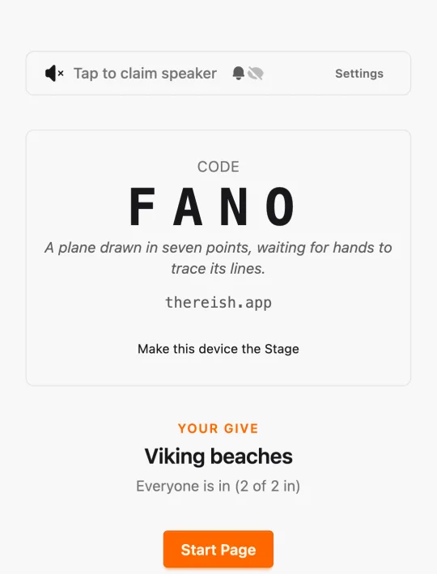
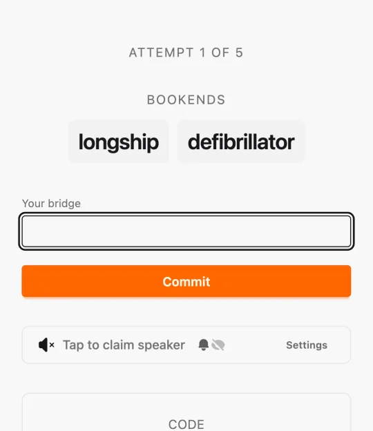
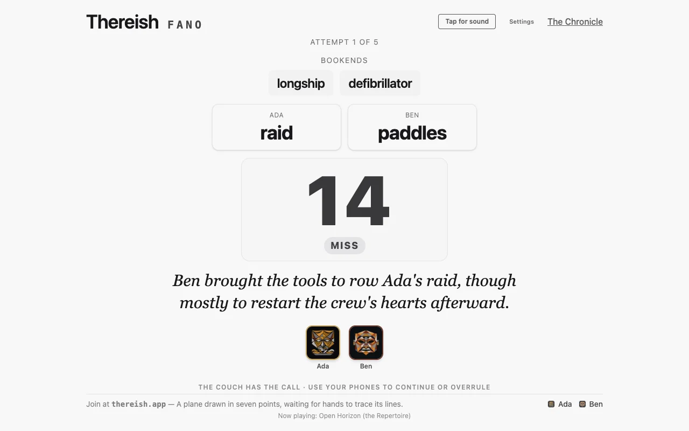
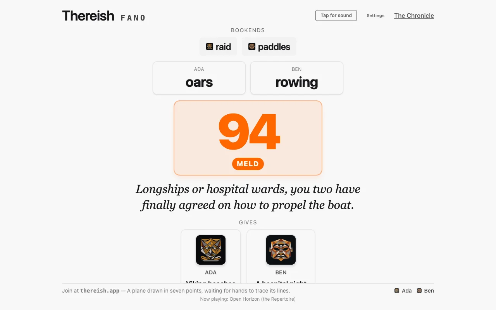
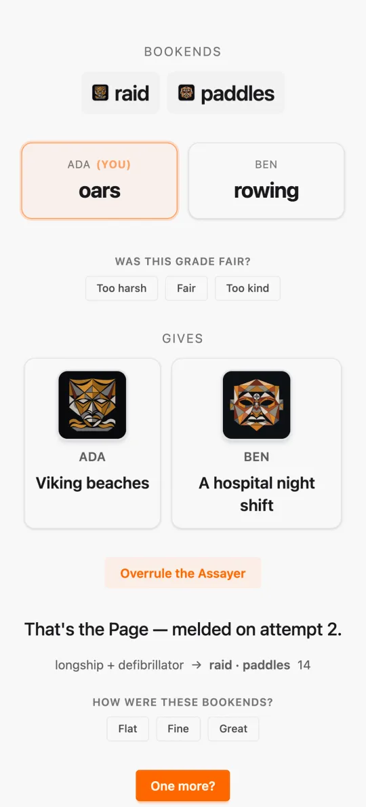
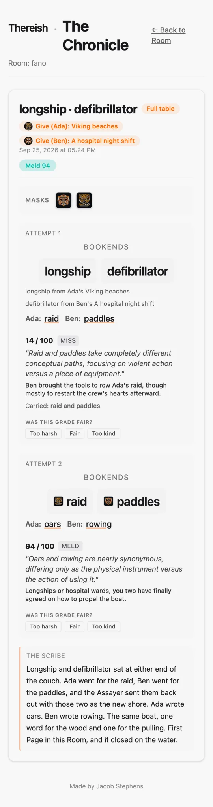

A one-line note
The whole project began as a single line in an empty README on August 31:
I want to make a game which plays with meaning. Maybe it could even use an LLM somehow. I want it more than anything else to be fun.
I needed "fun" to mean something I could test, so the design brief gave it one definition: a game Melissa likes. Her favorite games are So Clover, Codenames, Taboo, Monikers and NYT Connections. Each one stretches a single word's meaning over several things at once, with some fair misdirection mixed in. The ones she loves most are communication games, where meaning passes from one mind to another. So I set out to build one of those that two people could play on a couch in the evening.
Two weeks and 414 commits later it runs at thereish.app. It has been through three playtests, including an evening with another couple and a night with friends around a coffee table. Each one changed the design.
How a Page goes
The unit of play is a Page, about ten minutes from start to finish.
- Someone opens a Room and reads its Code aloud. The Code is a four-letter word, and a model picks it and adds a one-line quip. Everyone else types the Code and a name. There are no accounts.
- Each player types a Give, which is a setting in a phrase, like "Viking beaches" or "a hospital night shift". A Give stays private until the first reveal.
- The Author reads the Gives and writes two Bookends in a few seconds. Each one comes from a different Give, and the two are picked to sit far apart in meaning.
- Everyone writes a Bridge: a word or short phrase whose meaning spans both Bookends. The only rule is that you can't reuse a Bookend or a Bridge this Page has already seen.
- After a fixed beat comes the reveal: every Bridge, one number from 0 to 100, its band, and a one-line quip from the Assayer about what you actually wrote.


The band comes from the Ladder:
- miss 0
- adjacent 30
- close 55
- almost 75
- meld 90
- deep meld 100
A Meld ends the Page. On a miss, the two Bridges that landed furthest apart become the next Attempt's Bookends, so each Attempt starts closer together than the last one. After five Attempts the Page closes unmelded. "One more?" asks everyone for fresh Gives.

The number is the joke
Before building any network code, I wrote the rules as one throwaway HTML file, with a fake Author and a fake Assayer that used a toy heuristic. I played it alone on a laptop. The fake Assayer gave one of my Bridges a 24 out of 100, and I smirked.
That smirk changed what I thought the grader was for. I had treated it as a referee, a piece of infrastructure in the background. It turned out to be the source of the comedy. A low, precise, dispassionate grade is a punchline, especially when the quip after it names what you wrote. After that, I built the reveal as a small performance: a fixed 2.5-second beat, then the number, the band and the quip, with sound once someone claims the speaker. The Stage can also speak the band and the quip aloud.

The machine holds no player seat
Most group word games break with only two people. Somebody has to judge, vote, eavesdrop, or play the rival team. The research behind Thereish looked for a pattern in how publishers adapt games for two, and found a clear line. Publishers do fill mechanical seats with bots and dummy players. But every seat that has to understand free language was either left broken at two players or given a three-player minimum. A language model can fill exactly that seat.
I chose not to fill it. The first architecture decision in the repo says so:
If a human could do a role better, the role stays human, or the design waits for more humans.
So the machine only takes jobs nobody at the table could do better. It writes a fresh puzzle from whatever you typed at 9 p.m. It measures meaning-distance instantly, and the same way every time. It remembers every Page without getting tired or playing favorites. Everything goes through one module called the Steward, and each role is a few lines of configuration:
| Role | Job | Today |
|---|---|---|
| Author | Writes the Bookends at the table | Gemini 3.8 Flash, A/B-tested per Page against GPT-6 Astra |
| Assayer | Grades an Attempt's Bridges as a set and writes the quip | Gemini 3.8 Flash at low effort, hedged, every Verdict cached |
| Scribe | Names Rooms, titles music, writes the recap after play | Gemini 3.8 Flash for fast jobs; Claude Fable 5.1 for recaps, behind a prose linter |
| Foley | Music, stings, voice | Mureka for a Track per Page, ElevenLabs for stings, Hume Octave for the voice |
| Limner | Draws a Mask for every Give | Recraft V4 Styles |
The players always have the final say. The table can overrule the Assayer if everyone agrees, and the overrule is written down as precedent. The next time the same Bridges come up, they get the same grade.
Consistency beats accuracy
Research on language-model judges in games agrees on one thing. Players forgive a wrong ruling, but they don't forgive a ruling that contradicts an earlier one. And nothing in these models is deterministic: one study found 80 unique completions in 1,000 calls at temperature zero. You can't prompt your way to consistency, so Thereish enforces it outside the model:
- Every Verdict is cached, keyed by model, prompt version and normalized inputs. The same inputs always get the same grade.
- Both orderings are graded in parallel and averaged, because position bias is the most common failure of a fast judge model. Both orderings map to one cache key.
- Hedged requests are identical requests to one model. Sending two copies cuts the fast tier's tail latency. Sending to two different models would bring the inconsistency back.
- The beat is fixed, not a wait. A 2.5-second reveal covers a typical grade, so a fast answer and a slow one look the same to the table.
Never send a model to do a linter's job
Every role's output goes through a deterministic gate before any player sees it. A schema validator checks every answer. Elixir stemming stops a Bridge from reusing a Bookend's root, so "lava rock" is out after "lava". The Scribe's recaps go through Vale with a house style plus proselint, write-good and a package that flags common AI-writing habits.
That gate taught me something about cost. At first it rejected the Scribe's first draft almost every time, for two rules: no sentence starting with "So", and a word limit. Once I stated both rules in the prompt, four live runs in a row passed on the first try, at half the time and half the cost. Naming a rule in the prompt is cheaper than catching it afterward. The gate shows you which rules are worth naming.
What the playtests changed
The second night was too easy. The Author originally wrote Pages ahead of time. In a Room called DUST we played seven Pages and melded six, three of them on the first Attempt. Twice we both wrote the identical word. It also didn't feel like our game. When Melissa typed "give me two very unrelated words" as her theme, she was asking the Author to follow the rule it was already supposed to follow. So now no Page exists until everyone has given a Give, and the Author writes the Bookends live, in under five seconds.
The trap only fired once, and it fell flat. Pre-written Pages included a planted "bait" Bridge, meant as fair misdirection in the style of Connections. The one time it fired, we both wrote lighthouse, it scored 75, and we both tapped "too harsh". Bait is gone now. The same night, the best Page was one that never melded: five Attempts on river and money. So an unmelded Page now counts as an ordinary ending, not a failure.
The Stage is for reading, not touching. On the third night three of us played around a coffee table with a laptop as the Stage. Everything the reveal needs now fits on one laptop screen, so nobody has to reach for it during play. The phones drop the Code card below the fold as soon as a Page starts.
The Chronicle
Everything played goes into the Room's Chronicle. It's an append-only record of every Page, every Verdict with the Assayer's reasoning, every overrule, and a recap the Scribe writes after the Page closes. The reveal leaves the reasoning out, because the second playtest found it cluttered the moment. The Chronicle keeps it, so anyone can read why a grade came out the way it did. It is also available as Markdown at /r/CODE/chronicle.md, for a person or for a coding agent.


The spend for each Room is shown at the bottom of its Chronicle, and an operator page breaks it down by role and model. By the end of the first week, the game had spent $0.80 in total, and $0.71 of that went to recaps written at the highest reasoning effort. Nobody could tell those recaps apart from cheaper ones, so the Scribe now writes at low effort.
How it's built
It's a Phoenix LiveView app in Elixir. The server owns the state, each phone gets its own private view, and the Stage is just one more view. I also picked Elixir because I wanted to learn it. The decision came with a kill criterion: if I didn't have a working two-phone Room with rejoin after three evenings, I'd switch to TypeScript and Socket.IO. I didn't need to switch.
- The rules are a pure reducer in one file,
game.ex. It builds the state, applies an event, and projects what one Seat is allowed to see. It has no timers, sockets or model calls. - Every test grades against a fake Steward, so the suite of 1,102 tests never spends a cent.
- The Chronicle is Postgres: append-only event tables with the Page document as JSONB. Its version history is just the log.
- A/B testing is built in. Each Page is randomly assigned an arm, the labels are blinded, and outcomes go to the Chronicle. With two players there are no p-values, just streaks and a qualitative readout.
- Nineteen ADRs record each settled decision and what it replaced, so the design history can be read on its own.
- A push to
masterdeploys a Docker release to the same VPS that serves this blog, behind Apache.
Play it
Open a Room on a laptop, make that laptop the Stage, and have everyone else join on their phones. It works with two players and with up to six. There are no accounts and nothing to install.
The source is private for now while I decide what Thereish should become. The design history above comes from its design brief and ADRs. If you play it and it lands, or doesn't, I'd like to hear about it: jacob@stephens.page.